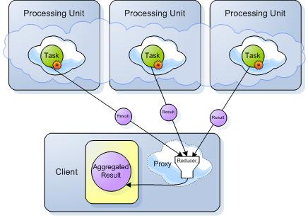

Section Summary: Task executors allow you to easily execute grid-wide tasks on the space using the GigaSpace API.
Overview
OpenSpaces comes with support for executing tasks in a collocated asynchronous manner with the Space (processing unit that started an embedded Space). Tasks can be executed directly on a specific cluster member using typical routing declarations. Tasks can also be executed in a "broadcast" mode on all the primary cluster members concurrently and reduced to a single result on the client side. Tasks are completely dynamic both in terms of content and class definitions (the task class definition does not have to be defined within the space classpath).

| The following example demonstrates how to use the task execution API |
Task API
The Task interface is defined as follows:
public interface Task<T extends Serializable> extends Serializable { /** * Computes a result, or throws an exception if unable to do so. * * @return computed result * @throws Exception if unable to compute a result */ T execute() throws Exception; }
Here is a simple implementation of a task that accepts a value that will be returned in the execute phase.
public class MyTask implements Task<Integer> { private int value; public MyTask(int value) { this.value = value; } public Integer execute() throws Exception { return value; } }
Executing the task itself uses the GigaSpace API with a routing value of 2 (the second parameter):
AsyncFuture<Integer> future = gigaSpace.execute(new MyTask(2), 2); int result = future.get();
Async API
Task execution is asynchronous in nature, returning an AyncFuture as the result of the execution allowing to get the result at a later stage in the code. AsyncFuture itself extends java.util.concurrent.Future.
The main deficiency of java.util.concurrent.Future is the fact that a call to get results in a blocking call (either indefinitely or for a specific timeout) causing the execution of a Task to not be completely asynchronous in terms of user API flow. AsyncFuture adds the ability to register an AsyncFutureListener which will be executed once a result arrives. Here are the interfaces for both AsyncFuture and AsyncFutureListener:
public interface AsyncFuture<V> extends Future<V> { void setListener(AsyncFutureListener<V> listener); } public interface AsyncFutureListener<T> { /** * A callback when a result of an async invocation arrives. */ void onResult(AsyncResult<T> result); }
Passing the listener can be done by setting it on the AsyncFuture or when executing a task using the GigaSpace API as an additional parameter.
AsyncResult can be used to extract the result or the exception of the execution. Here it is:
public interface AsyncResult<T> { /** * Returns the result of the async invocation. Returns <code>null</code> * in case of an exception. {@link #getException()} should be checked for * successful execution. */ T getResult(); /** * In case of an async invocation failure, returns the exception causing it. * If the invocation is successful, this method returns <code>null</code>. */ Exception getException(); }
Task Routing
When executing a single Task there are several ways its routing can be controlled. The simplest form is by passing the routing information as a parameter to the execute command, for example:
AsyncFuture<Integer> future = gigaSpace.execute(new MyTask(2), 2); int result = future.get();
The routing parameter value will be used as the routing value. In case it is a POJO defined with a @SpaceRouting on one of its properties, the value of that property will be used as the routing information when passed as a parameter. For example:
public void Order { // ... @SpaceRouting public Integer getOrderRouting() { // ... } } Order order = new Order(); AsyncFuture<Integer> future = gigaSpace.execute(new MyTask(2), order); int result = future.get();
Routing information can also be defined on the Task itself either using @SpaceRouting annotation or using the optional TaskRoutingProvider interface (for non annotations based configuration). Here are how they can be used:
Annotation
public class MyTask implements Task<Integer> { private int value; public MyTask(int value) { this.value = value; } public Integer execute() throws Exception { return value; } @SpaceRouting public Integer routing() { return this.value; } }
Interface
public class MyTask implements Task<Integer> implements TaskRoutingProvider { private int value; public MyTask(int value) { this.value = value; } public Integer execute() throws Exception { return value; } public Integer getRouting() { return this.value; } }
Once the routing information is defined on the Task, it can be executed (without the need for additional parameters):
AsyncFuture<Integer> future = gigaSpace.execute(new MyTask(2)); int result = future.get();
DistributedTask API
A DistributedTask is a task that ends up executing more than once (concurrently) and returns a result that is a reduced operation of all the different executions.
Phase 1 - Sending the Tasks to be executed:

Phase 2 - Getting the results back to be reduced:

Here is the DistributedTask API:
public interface AsyncResultsReducer<T, R> { R reduce(List<AsyncResult<T>> results) throws Exception; } public interface DistributedTask<T extends Serializable, R> extends Task<T>, AsyncResultsReducer<T, R> { }
The distributed task interface extends both Task and AsyncResultsReducer. The Task interface is used to execute a specific execution of the distributed task (there will be several executions of it), and the AsyncResultsReducer is used to reduce the results of all the executions.
Lets write a (very) simple example of a DistributedTask:
public class MyDistTask implements DistributedTask<Integer, Long> { public Integer execute() throws Exception { return 1; } public Long reduce(List<AsyncResult<Integer>> results) throws Exception { long sum = 0; for (AsyncResult<Integer> result : results) { if (result.getException() != null) { throw result.getException(); } sum += result.getResult(); } return sum; } }
The above task simply returns 1 for its execute operation, and the reducer simply sums all the executions. If there was an exception thrown during the execute operation (in our case, it will never happen), the exception will be throws back to the user during the reduce operation.
A distributed task is used when either executing a task the is directed to several nodes based on different routing values, or one that is broadcast to all the primary nodes of the cluster. Executing a distributed task on several nodes based on different routing values can be done as follows:
AsyncFuture<Long> future = gigaSpace.execute(new MyDistTask(), 1, 4, 6, 7); long result = future.get(); // result will be 4
In the above case, the distributed task is executed (concurrently and asynchronously) on 4 nodes that correspond to routing values of 1, 4, 6, and 7.
Broadcasting the execution to all current primary nodes can be done by simply executing just the distributed task. Here is an example:
AsyncFuture<Long> future = gigaSpace.execute(new MyDistTask()); long result = future.get(); // result will be the number of primary spaces
In this case, the distributed task will be executed on all the primary spaces of the cluster.
AsyncResultFilter
When executing a distributed task, results arrive in an asynchronous manner and once all the results have arrived, the AsyncResultsReducer is used to reduce them. The AsyncResultFitler can be used to as a callback and filter mechanism to be invoked for each result that arrives.
public interface AsyncResultFilter<T> { /** * Controls what should be done with the results. */ enum Decision { /** * Continue processing the distributed task. */ CONTINUE, /** * Break out of the processing of the distributed task and move * to the reduce phase. */ BREAK, /** * Skip this result and continue processing the rest of the results. */ SKIP } /** * A callback invoked for each result that arrives as a result of a distributed task execution allowing * to access the result that caused this event, the events received so far, and the total expected results. */ Decision onResult(AsyncResultFilterEvent<T> event); }
The filter can be used to control if a result should be used or not (the SKIP decision). If a we have enough results and we can move to the reduce phase (the BREAK decision). Or, if we should continue accumulating results (the CONTINUE decision).
The filter can also be used as a way to be identify that results have arrived and we can do something within our application as a result of that. Note, in this case, make sure that heavy processing should be performed on a separate (probably pooled) thread.
ExecutorBuilder API
The executor builder API allows to combine several task executions (both distributed ones and non distributed ones) into a seemingly single execution (with a reduce phase). Think of the ExecutorBuilder as a cartridge that accumulates all the tasks to be executed, and then executes all of them at once giving back a reduced result (in a concurrent and asynchronous manner). Here is an example of the API:
AsyncFuture<Integer> future = gigaSpace.executorBuilder(new SumReducer<Integer, Integer>(Integer.class)) .add(new MyTask(2)) .add(new MyOtherTask(), 3) .add(new MyDistTask()) .execute(); Integer result = future.get();
In the above case, there are several tasks that are "added" to the ExecutorBuilder, executed (in a similar manner to a single distributed task) and then reduced using a sum reducer that is provided when building the ExecutorBuilder.
The ExecutorBuilder can also be passed an optional AsyncResultFilter if the reducer also implements it.
Space Injection
The most common scenario for using executors is by interacting with the collocated Space the task in executed on. A GigaSpace instance, which works against a collocated Space can be easily injected either using annotations or using an interface. Here is an example:
Annotation
public class TemplateCountTask implements DistributedTask<Integer, Long> { private Object template; @TaskGigaSpace private transient GigaSpace gigaSpace; public TemplateCountTask(Object template) { this.template = template; } public Integer execute() throws Exception { return gigaSpace.count(template); } public Long reduce(List<AsyncResult<Integer>> results) throws Exception { long sum = 0; for (AsyncResult<Integer> result : results) { if (result.getException() != null) { throw result.getException(); } sum += result.getResult(); } return sum; } }
Interface
public class TemplateCountTask implements DistributedTask<Integer, Long>, TaskGigaSpaceAware { private Object template; private transient GigaSpace gigaSpace; public TemplateCountTask(Object template) { this.template = template; } public void setGigaSpace(GigaSpace gigaSpace) { this.gigaSpace = gigaSpace; } public Integer execute() throws Exception { return gigaSpace.count(template); } public Long reduce(List<AsyncResult<Integer>> results) throws Exception { long sum = 0; for (AsyncResult<Integer> result : results) { if (result.getException() != null) { throw result.getException(); } sum += result.getResult(); } return sum; } }
Injecting a Clustered Space Proxy
You may use the ApplicationContextAware interface to inject a clustered proxy into the Task implementation. This is useful when the Task should access other partitions. See below example:
public class MyTask implements Task<Integer>, ApplicationContextAware { @TaskGigaSpace private transient GigaSpace colocatedSpace; private transient GigaSpace clusteredSpace; public MyTask() { } public void setApplicationContext(ApplicationContext applicationContext) throws BeansException { clusteredSpace= (GigaSpace) applicationContext.getBean("clusteredGigaSpace"); } .... }
where the pu.xml should have:
<os-core:space id="space" url="/./space" /> <os-core:giga-space id="clusteredGigaSpace" space="space" clustered="true"/>
Task Resource Injection
A task might need to make use of resources defined within the processing unit it is executed at (which are not the collocated Space). For example, have access to a bean defined within the collocated processing unit. A Task executed goes through the same lifecycle of a bean defined within a processing unit (except for the fact that it is not registered with a processing unit). Thanks to this fact, injecting resources can be done using annotations (@Autowired and @Resource) or lifecycle interfaces (such as ApplicationContextAware).
In order to enable resource injection, the Task must either be annotated with AutowireTask or implement the marker interface AutowireTaskMarker. Here is an example of injecting a resource of type OrderDao registered under the bean name orderDao. The OrderDao is then used to count the number of orders for each node.
@AutowireTask public class OrderCountTask implements DistributedTask<Integer, Long> { private Object template; @Resource(name = "orderDao") private transient OrderDao orderDao; public Integer execute() throws Exception { return orderDao.countOrders(); } public Long reduce(List<AsyncResult<Integer>> results) throws Exception { long sum = 0; for (AsyncResult<Integer> result : results) { if (result.getException() != null) { throw result.getException(); } sum += result.getResult(); } return sum; } }
When enabling autowiring of tasks, OpenSpaces annotations/interface injection can also be used such as ClusterInfo injection.
Built in Reducers
OpenSpaces comes with several built in reducers and distributed tasks that can be used to perform common reduce operations (such as Min, Max, Avg and Sum). For example, if you use a simple Task:
public class MyTask implements Task<Integer> { public Integer execute() throws Exception { return 1; } }
We can easily make a distributed task out of it that sums all the results using the SumTask:
AsyncFuture<Integer> future = gigaSpace.execute(new SumTask<Integer, Integer>(Integer.class, new MyTask())); int result = future.get(); // returns the number of active cluster members
In the above case, SumTask is a distributed task that wraps a simple Task. It automatically implements the reduce operation by summing all the results. This execution will result in executing a distributed task against all the primaries.
SumTask uses internally the SumReducer which is just implements AsyncResultsReducer. The reducer, by itself, can be used with APIs that just use a reducer, for example, the ExecutorBuilder construction.
Transactions
Executors fully support transactions similar to other GigaSpace API. Once an execute operation is executed within a declarative transaction, it will automatically join it. The transaction itself is then passed to the node the task executed on and added declaratively to it. This means that any GigaSpace operation performed within the task execute operation will automatically join the transaction started on the client side.
An exception thrown within the execute operation will not cause the transaction to rollback (since it might be a valid exception). Transaction commit/rollback is controlled just by the client the executed the task.
 When executing distributed tasks or tasks that executed on more than one node within the same execution should use the distributed transaction manager. Tasks that execute just on a single node can use the distributed transaction manager, but should use the local transaction manager.
When executing distributed tasks or tasks that executed on more than one node within the same execution should use the distributed transaction manager. Tasks that execute just on a single node can use the distributed transaction manager, but should use the local transaction manager.
j.u.c ExecutorService
OpenSpaces executors support allows to easily implement java.util.concurrent.ExecutorService which allows to support the ExecutorService API and executed Callable and Runnable as tasks within the Space. Here is an example of how to get an ExecutorService implementation based on OpenSpaces executors and use it:
ExecutorService executorService = TaskExecutors.newExecutorService(gigaSpace); Future<Integer> future = executorService.submit(new MyCallable()); int result = future.get();
The java.util.concurrent support also comes with built in adapters from Callable/Runnable to Task/DistributedTask. The adapters are used internally to implement the ExecutorService, but can be used on their own. The adapters can be constructed easily using utility methods found within the TaskExecutors factory. Here is an example:
// convert a simple callable to task Task<Integer> task1 = TaskExecutors.task(new MyCallable()); // convert a simple callable to distributed task DistributedTask<Integer> task2 = TaskExecutors.task(new MyCallable(), new SumReducer<Integer, Integer>(Integer.class));